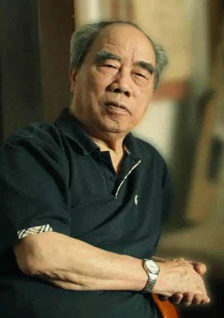

戴泽
徐悲鸿美术教育学派代表人物之一
中央美术学院奠基者之一
曾任徐悲鸿画室导师、徐悲鸿国立艺专重要助手
戴老1942年考入国立中央大学艺术系，师从徐悲鸿、吕斯百、傅抱石、黄显之、秦宣夫、谢稚柳、陈之佛等名家，先后创作：《小会计》 《淝水之战》 《义和团》 《张献忠》 《廊坊大捷》 《纳木湖畔》等
《小会计》
《淝水之战》
《义和团》
《张献忠》
《廊坊大捷》
《纳木湖畔》
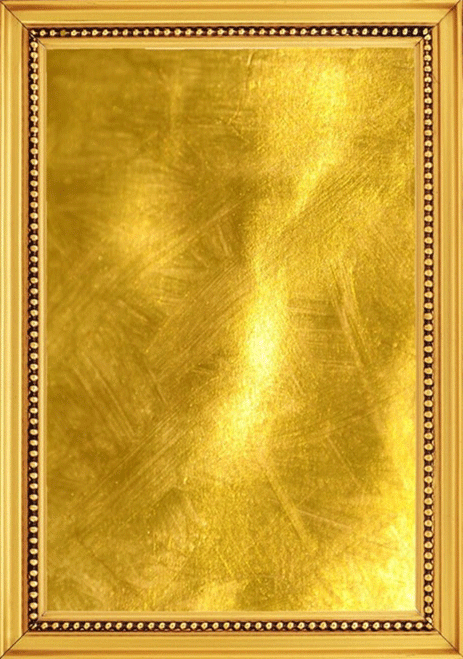
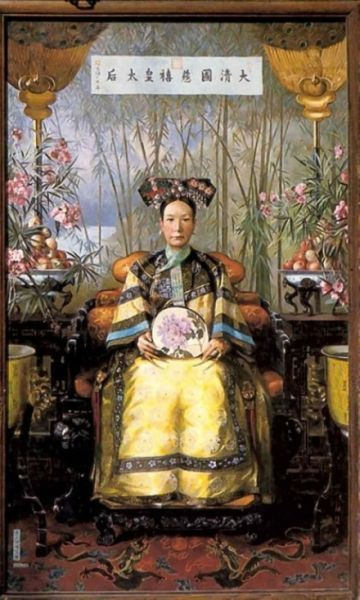
1979年接手颐和园慈禧像修复工作
他说：“慈禧也有她的难处。”
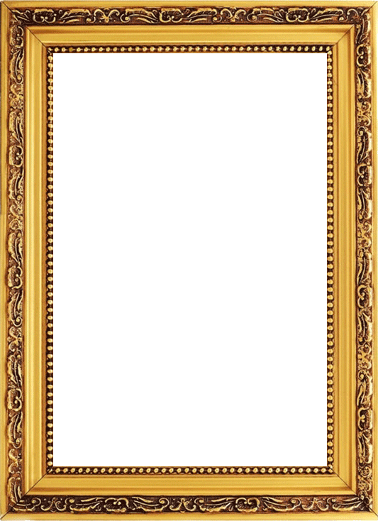
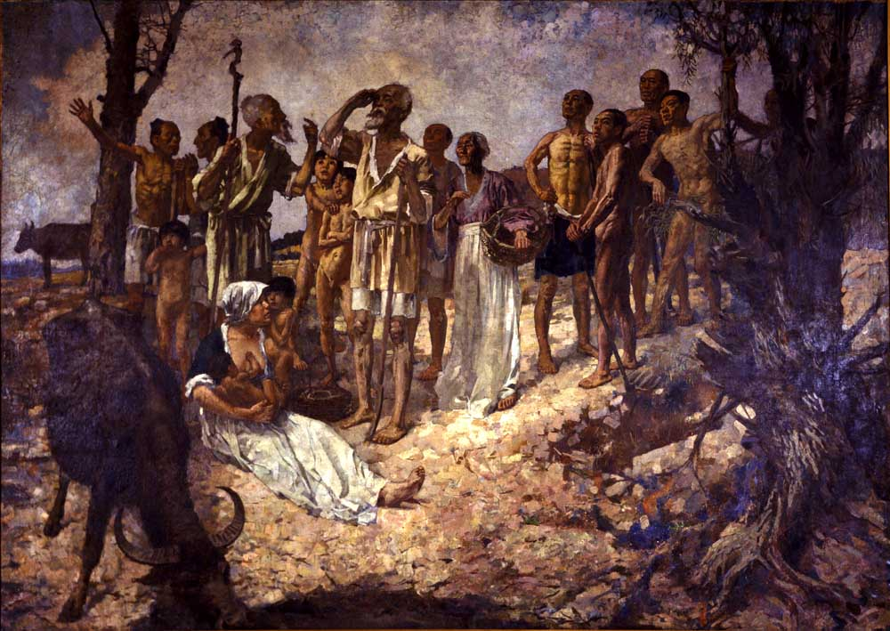
奚我后
戴先生两次修补徐悲鸿作品《奚我后》
此乃徐悲鸿杰出代表作之一
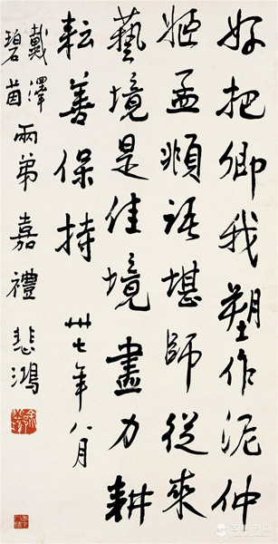
在戴老婚礼上
徐悲鸿大师题诗以赠
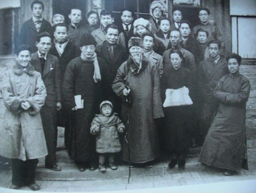
此张珍贵的照片中云集众多艺术大家：齐白石、徐悲鸿、李可染、王临乙（人民英雄纪念碑作者之一）、董希文（开国大典作者）及右一的戴泽。
《平壤广场》
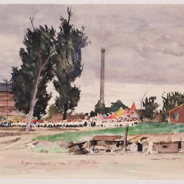
戴老两次去朝鲜为志愿军作画，写生并创作了《修桥》 《钢铁运输线》《大同江上》《平壤广场》等优秀作品
《廊坊大捷》
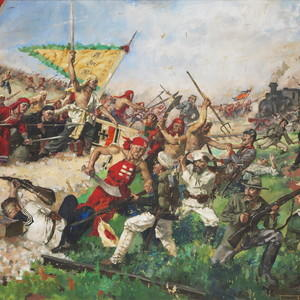
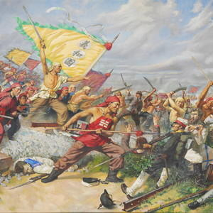
55-60年间，戴老创作了多幅大型历史题材作品
《农民小组会》
《淝水之战》
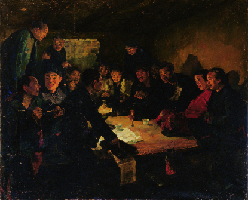
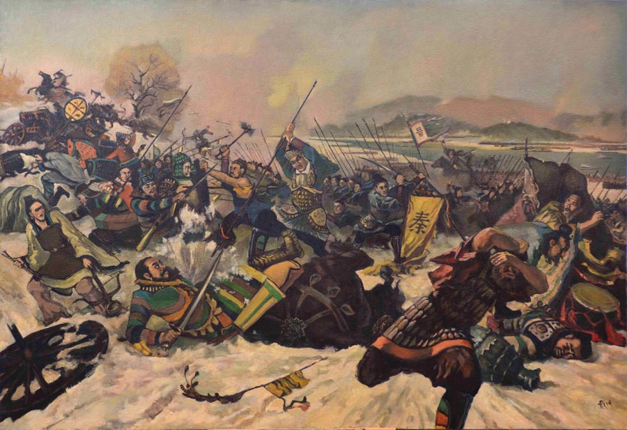
徐悲鸿曾评价戴老：画如其人，既扎实又老实
《胜利的行列》
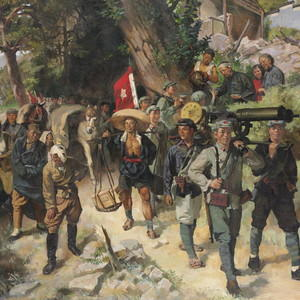
戴老在五十年代创作了《张献忠》《谅山大捷》《毛主席与廖承志》《胜利的行列》等优秀作品，多幅被国家博物馆收藏
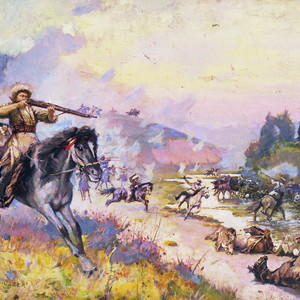
1977年，戴老创作《岔沟之战》，并参加民族艺术展
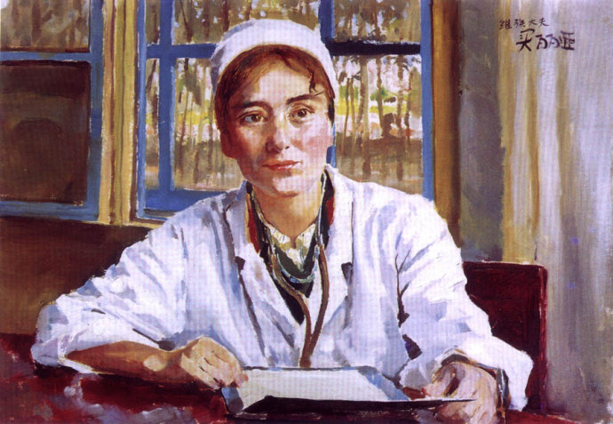
1979年，戴老赴新疆写生，创作《越过天山》《维族女医生》等作品
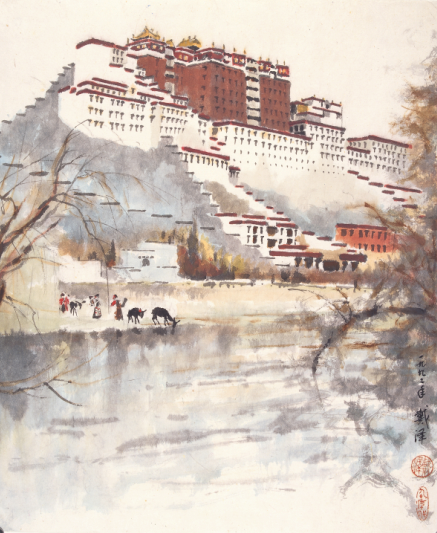
戴老名作《布达拉宫之春》
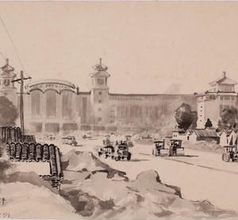
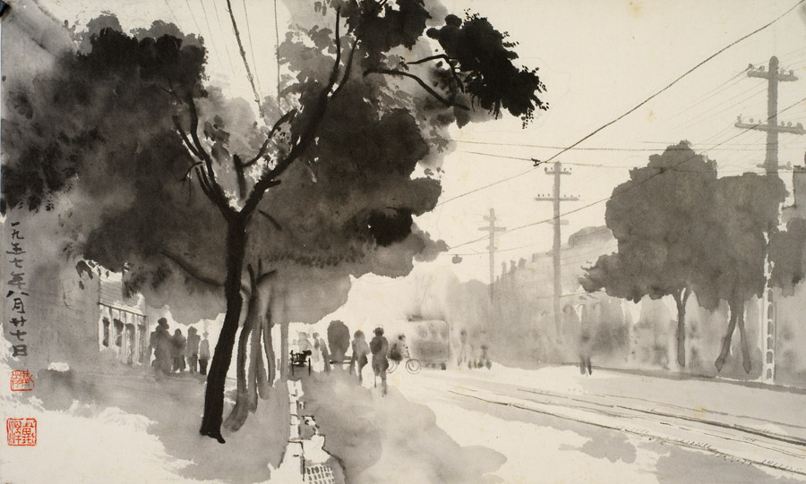
戴老对老北京的细腻刻画，无疑是展现老北京风貌的珍贵资料


请长按二维码，关注“博索艺术”，
或者直接添加（“+”）“bonshop”。